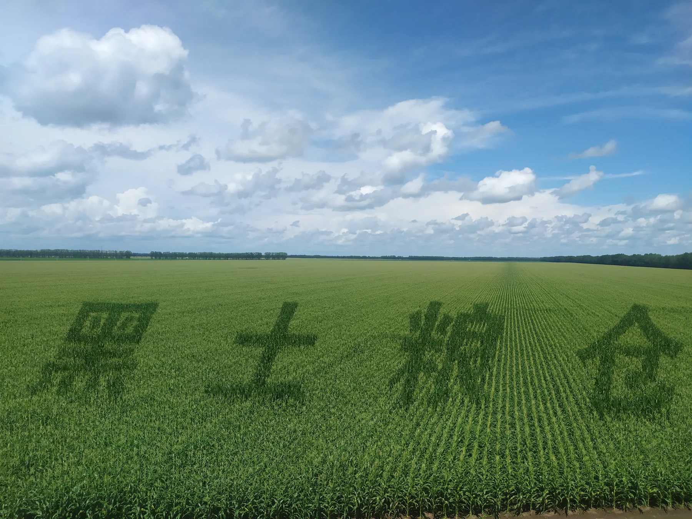
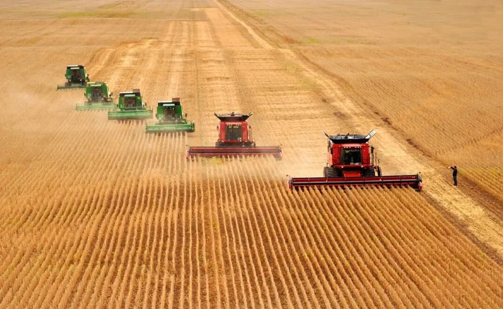

现代农业 · 生产现场
万亩良田
从友谊农场的盛夏稻田和稻田画，看五分场二队怎样把连片种植、机械化和数字农业带到田间。

把“数字农业”种进稻田

这幅稻田画里，拖拉机、无人机、手持设备的人物和粮仓组成一幅图，田里还种出了“数字农业 智富友谊”八个字。走到田边近看是一行行稻株，登高才容易看清画面。
制作稻田画，要把图案放样到田里，再按轮廓分区栽种不同叶色的水稻。秧苗长起来后，深浅不同的叶色才显出图形。它让人看到现代农业怎样把品种选择、田间测绘和精细栽植用在观光上。
画里的无人机和粮仓也有生产中的对应物。2022年秋收时，友谊分公司已经用数字平台汇集农业生产数据；在稻田里，智能闸门还能根据监测数据调节进水。稻田画展示的是农艺与设计，数字农业还要解决水怎么用、农机怎么走、粮食怎么收。
从夏日稻田到金秋收获
秋收时，林带把一片片田地分开，收割机沿着成排的作物向前作业。





从成套农机到精准农业
万亩良田在庆丰乡。五分场二队是今天第五管理区第二作业站的旧称。1978年，这里试用成套农机，把耕整、播种、田管和收获接在一起。站在观景点，还能看到连片田块与贯穿田间的作业道路。
2001年，这里又开展精准农业试点，用卫星定位把收获量记录到具体位置，再根据地块差异调整投入。查看试点经过。